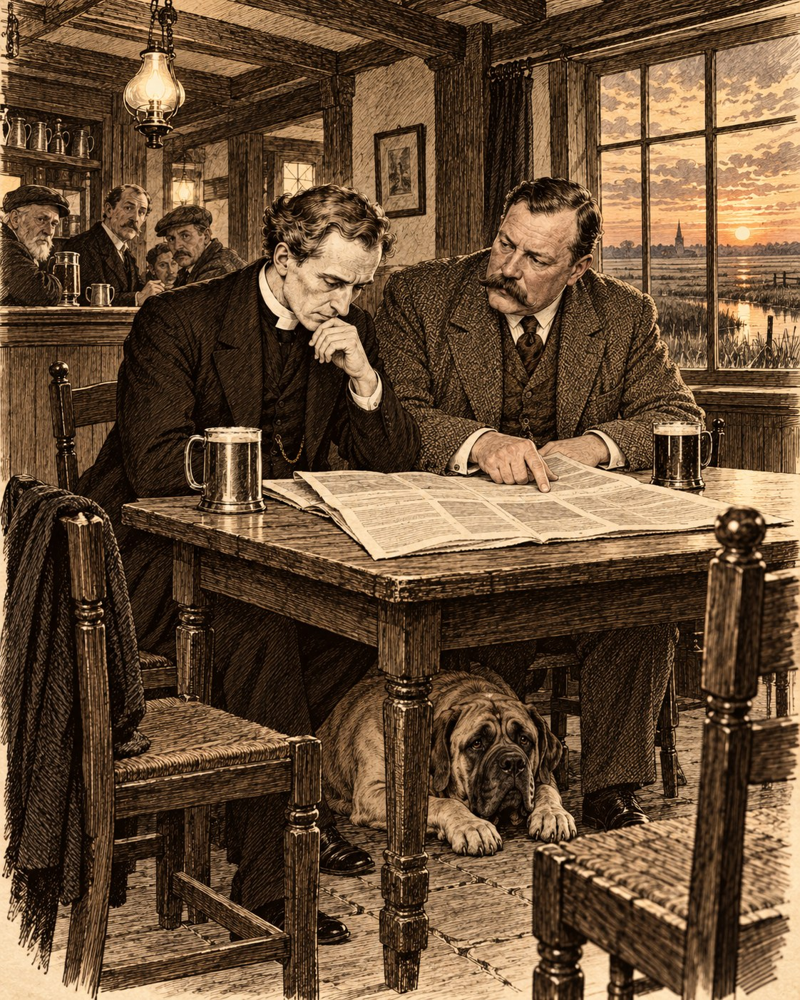

Чужой

Есть люди, которые узнают о преступлениях из газет, и есть газеты, которые узнают о преступлениях от людей. В Сент-Гатлаке весной тысяча девятьсот седьмого года случилось третье, самое неприятное: преступление само выучилось по газетам.
Сент-Гатлак стоит на краю Фенов — осушенной болотной равнины к востоку от Стамфорда, такой плоской, что небо там занимает три четверти мира, а земле приходится довольствоваться оставшейся четвертью. В мае эта четверть зеленеет, в канавах стоит тёмная неподвижная вода, и луга, отнятые у болота двести лет назад, всё ещё похожи на людей, которые не совсем уверены, что их не отберут обратно. На таком лугу, принадлежавшем фермеру Сэмюелу Холлису, утром шестого мая нашли кобылу с длинной раной поперёк брюха.
Кобыла выжила. Коновал из Дипинга зашил её, ругаясь так страшно, что вечером пришёл к викарию извиняться. Преподобный Эмброуз Морс принял извинения с удовольствием, потому что сам думал примерно то же самое, только по-латыни.
Через два дня, в ночь на четверг, изрезали корову у соседа Холлиса, старого Эйбла Тиндалла, а наутро почти в каждом доме прихода нашли под дверью листок, исписанный печатными буквами. Буквы были крупные, кривые и очень старательные, как у ребёнка, который хочет казаться страшным. Листок сообщал, что фенская шайка режет по ночам, что это только начало и что следующим будет не зверь. Внизу стояла подпись: «Капитан шайки».
В любой другой год деревня посмеялась бы над капитаном, а заодно и над шайкой, которой у неё никогда не было. Но в этот год деревня была образованна. Всю зиму хозяин трактира «Плуг» по вечерам читал вслух The Daily Telegraph, и весь приход, от кузнеца до церковного сторожа, знал наизусть историю, которую газета печатала с января. Четыре года назад в Грейт-Уирли, шахтёрской деревне в Стаффордшире, кто-то по ночам калечил лошадей и коров, а в дома подбрасывали письма от имени шайки. Полиция арестовала Джорджа Эдалджи, молодого адвоката из Бирмингема, сына местного викария, и суд дал ему семь лет каторжных работ. Через три года его выпустили, ничего не объяснив, и тогда за его дело взялся сэр Артур Конан Дойл — тот самый, что придумал Шерлока Холмса. Дойл написал в газету, что Эдалджи так близорук, что ночью в поле не отыскал бы и стога, не то что пони, и что осудили его потому, что отец у него был парс из Бомбея, а сам он — смуглый и странный. Теперь в Лондоне заседала комиссия министерства внутренних дел, и вся Англия ждала, что она скажет.
Поэтому, когда в Сент-Гатлаке появилась собственная шайка, деревня поняла её сразу и почти с гордостью, как понимают моду, дошедшую из столицы. И так же сразу, как будто ей подсказали, она поняла, кто здесь Эдалджи.
Каждую осень в Фены приходили ирландцы. Они копали картофель, спали в сараях, пили своё, пели своё и к Рождеству уходили, так что деревня о них помнила столько же, сколько о прошлогоднем снеге. Майкл Куинн, батрак из Мейо, не ушёл. Он нанялся к Холлису на зиму, чинил изгороди, чистил канавы и по воскресеньям ходил пешком к мессе за много миль, потому что ближе католической церкви не было. Перед Пасхой Холлис его рассчитал. Ссору во дворе слышала половина улицы: фермер назвал Куинна пьяницей и папистом, а Куинн ответил, что Холлис его ещё вспомнит. Теперь деревня вспоминала эти слова чаще, чем Холлис.
— Они ищут не того, кто резал, — сказала Агнес Морс за завтраком, — а того, на кого удобно подумать. А удобнее ирландца у нас никого нет. Он пьёт не в нашем трактире, молится не в нашей церкви и, что хуже всего, смешно говорит.
Капитан шайки не пропустил и дом викария, и его листок лежал теперь у сахарницы. Викарий смотрел на листок с тем выражением, с каким смотрят на плохие стихи, написанные хорошим человеком.
— Я не хочу этого слышать, — сказал он.
— Конечно, не хочешь, — согласилась Агнес. — Поэтому я и говорю.
Викарию было за сорок. Он был высок, слегка сутул, как бывают сутулы люди, привыкшие наклоняться к собеседнику, и обладал тем, что жена называла его несчастьем, а епископ — его неудобством: он слышал фальшь. Он слышал её в хоре, когда альты брали на четверть тона ниже, в проповедях коллег, в свадебных клятвах и в рассказах свидетелей. Это не делало его ни мудрее, ни счастливее, зато делало трудным человеком для всех, кто говорит неправду, а таких, как он грустно знал по опыту, в любом приходе больше, чем кажется с кафедры.
Сейчас он слышал фальшь в целой деревне сразу и не мог понять, в чём она.
Под столом вздохнул Ферокс, большой мастиф цвета мокрого песка, тяжело и с упрёком, как вздыхают собаки, которым за завтраком ничего не перепало. На подоконнике кот Пами следил за воробьями с видом судьи, который уже вынес приговор и ждёт только исполнения.
— Папа, — сказал Томми, оторвавшись от Strand Magazine, — а правда, что сэр Артур Конан Дойл похож на Холмса?
Томми было лет одиннадцать, и он находился в том счастливом возрасте, когда сыщик кажется важнее епископа, а Бейкер-стрит — ближе Иерусалима.
— Насколько я знаю, — сказал викарий, — он похож на большого шотландского врача, который пишет про Холмса. Это совсем другое и гораздо полезнее. Холмс никого не лечил.
— Зато он находил преступников.
— Сэр Артур тоже кое-кого нашёл, — заметила Агнес. — Невиновного. Это гораздо труднее.
Вечером викарий пошёл в «Плуг». Он ходил туда часто, после вечерни, и пил пиво не оттого, что хотел забыться, а оттого, что хотел помнить: о людях, которые сидят рядом, о том, что они говорят, когда не стоят перед алтарём, и о том, что Господь, превративший воду в вино на свадьбе, явно не считал радость грехом. Он пил весело, в компании и с аппетитом. Приход это знал и, надо сказать, уважал его скорее больше, чем меньше.
В «Плуге» говорили о шайке. Громче всех говорил Уильям Раддок, племянник Холлиса, — плотный, загорелый человек под сорок, с открытым лицом и голосом, который в церковном хоре был лучшим басом от Стамфорда до Сполдинга. Раддок родился в Сент-Гатлаке, мальчиком уехал с матерью в Канаду и два года назад вернулся. За эти два года он стал здесь своим больше, чем многие, кто отсюда никуда не уезжал. Он помнил всех стариков по именам, знал, где была старая мельница, и рассказывал о детстве так, что женщины утирали глаза. Особенно хорошо он рассказывал о похоронах отца: как весь приход пел над могилой и как он, семилетний, держал мать за руку и не плакал, потому что отец не велел.
— Мы этого ирландца год кормили, — говорил Раддок, — а он режет нашу скотину. В Уирли полиция четыре года искала, а тут и искать нечего.
Деревня соглашалась. Викарий пил пиво и слушал, и ему не нравилось, что деревня соглашается так дружно, как не поёт даже на Пасху.
На обратном пути, у калитки дома викария, его догнал сам Холлис. Это был большой медлительный человек, вдовец, который пришёл в приход из-под Холбича лет двадцать назад, взял ферму в аренду, женился на местной девушке Марте Пайк и с тех пор считал Сент-Гатлак своим так же упрямо, как считал своими свои межи. Марта умерла три года назад. Холлис заказывал ей надгробие у камнереза в Стамфорде и, говорили, никак не мог выбрать надпись.
— Ваше преподобие, — сказал он, глядя куда-то мимо викария, в темноту над Фенами. — Мне бы с вами потолковать. По одному делу. Насчёт книги.
— Какой книги, Холлис?
— Вашей. Приходской. Где записывают, кого крестили и кого схоронили. — Он помолчал. — Тут, видите ли, одна могила. Я в субботу зайду. Не хочу зря говорить, пока сам не погляжу.
Он кивнул и ушёл, тяжело ступая по дороге, и викарий долго смотрел ему вслед. Он не услышал фальши в его голосе. Он услышал там страх, а это совсем другая нота: её берут честные люди, когда узнают что-то, чего знать не хотели.
До субботы Холлис не дожил.
⁂
После первой кобылы Холлис стал по ночам сторожить своих лошадей сам. Он брал фонарь, старое ружьё, которое не заряжал, потому что не верил в него, и садился на межевом валу у канавы, откуда был виден весь луг. Племянник уговаривал его лечь, но Холлис был из тех людей, которые охраняют своё не потому, что надеются кого-то поймать, а потому, что иначе не могут уснуть.
В субботу на рассвете Уильям Раддок прибежал в деревню без шапки и закричал под окнами констебля. Холлис лежал на валу лицом вниз, с проломленной головой. Фонарь погас и скатился в канаву. В двадцати шагах, у изгороди, стоял жеребёнок той самой кобылы и дрожал всем телом, а по его боку тянулась длинная, уже почерневшая рана. Жеребёнок был жив. Холлис — нет.
Викарий пришёл, когда на лугу уже стояла половина деревни. Он опустился на колени у тела, прочёл отходную, которую следовало прочесть на несколько часов раньше, и долго не поднимался. Люди решили, что он молится, и не мешали. Он и правда молился, но, кроме того, смотрел, а молитва этому никогда не мешала, скорее наоборот.
Он видел, что удар пришёлся сзади. Холлис сидел лицом к лугу, к лошадям, и тот, кто подошёл к нему, подошёл со стороны деревни, а не со стороны поля. Он видел, что ружьё лежит рядом, аккуратно, как будто хозяин сам положил его, и что Холлис не успел до него дотянуться. Он видел, что трава на валу примята не сильно, а значит, борьбы не было. Холлис не ждал удара от человека, который к нему подошёл.
Но всё это викарий видел не как сыщик, а как священник, и потому думал при этом не о следах, а о том, что сказал ему Холлис у калитки. «Тут, видите ли, одна могила». Холлис хотел говорить о мёртвых, и теперь сам лежал среди них, так и не сказав.
К полудню приехал инспектор Крейн из Стамфорда. Он был человеком неглупым, аккуратным и, к несчастью, начитанным. Он тоже всю зиму читал Telegraph, но читал её как полицейский, то есть с обидой за коллег из Стаффордшира. По его мнению, сэр Артур Конан Дойл был великим писателем и вредным человеком, а капитан Энсон, начальник стаффордширской полиции, которого Дойл так поносил, просто делал свою работу. Инспектор приехал в Сент-Гатлак с твёрдым намерением доказать, что английская провинциальная полиция умеет ловить преступников без помощи романистов.
К вечеру преступник был пойман.
Куинна видели ночью на гати — так в Фенах зовут дорогу, насыпанную через низину, — в полумиле от луга Холлиса. Где он был и что там делал, он объяснить не захотел. У него нашли нож, каким режут верёвку и хлеб и каким при желании можно резать что угодно. На ноже ничего не было, но инспектор справедливо заметил, что ножи моют. Куинна заперли в задней комнате дома констебля, окно которой выходило на церковный двор, и инспектор послал телеграмму в Стамфорд, что дело раскрыто.
Деревня вздохнула с облегчением, как вздыхает больной, которому назвали болезнь. Болезнь была страшная, но имела имя, и это было лучше, чем ничего.
Утром в воскресенье викарий служил утреню при полной церкви. Пришли даже те, кто не ходил с Рождества, потому что в такие дни люди хотят стоять рядом. Раддок пел в хоре, и бас его звучал так глубоко и горько, что старухи плакали. После службы он подошёл к викарию на паперти. Глаза у него были красные.
— Он мне был вместо отца, ваше преподобие, — сказал Раддок. — Своего я ведь почти не помню. Только похороны.
— Я знаю, — сказал викарий. — Мне очень жаль, Уильям.
Он сказал правду: ему было жаль. Но в ту минуту, когда он протянул Раддоку руку, Ферокс, который по воскресеньям ждал хозяина у церковной ограды, поднялся и зарычал. Это было так неожиданно и так не похоже на него, что все обернулись. Ферокс был собакой мирной, с той ленивой добротой, какая бывает у очень больших и очень сильных существ, и рычал за всю жизнь, может быть, раза три, причём один раз — на епископа.
Раддок отступил на шаг и вдруг невесело усмехнулся.
— Это он ирландца чует, — сказал он. — Куинн у нас на ферме всю зиму прожил, весь двор им пропах. На мне, видно, и осталось.
Вокруг засмеялись, с облегчением и чуть громче, чем надо, и кто-то сказал, что собака умнее полиции и сразу поняла, где чужой. Викарий велел Фероксу замолчать, и Ферокс замолчал, но смотрел на Раддока по-прежнему, тяжело и неотрывно, как смотрят собаки, которым не дали договорить.
Дома Агнес выслушала эту историю молча, потом сказала:
— Холлис на прошлой неделе был у камнереза в Стамфорде. Миссис Тиндалл мне говорила. Он наконец выбрал надпись для Марты, и камнерез приезжал смотреть место.
— Какое место?
— На кладбище, конечно. Где Пайки лежат. Марта ведь Пайк, она там, у своих, рядом с сестрой. — Агнес помолчала. — Сестра её, Эллен, вышла за Джона Раддока. Это Уильямова мать. Только она там не лежит, она в Канаде умерла. А Джон Раддок лежит.
— И что сказал камнерез?
— Ничего. Он сказал, что Холлис долго стоял у ограды и что-то разглядывал в траве, а потом сказал, что ему надо подумать. И уехал, не дав задатка.
Викарий долго молчал.
— Холлис хотел поговорить со мной о могиле, — сказал он наконец. — И о книге.
— Значит, сходи посмотри на могилу, — сказала Агнес. — И на книгу. Это ведь не запрещено даже полиции.
Но в тот день он не пошёл. Вместо этого вечером он отправился в дом констебля и попросил пустить его к Куинну.
Ирландец сидел на лавке у окна, худой, рыжеватый, со стёртыми от работы руками, и смотрел на викария так, как смотрят на человека, который пришёл не вовремя и не по адресу.
— Я вам не прихожанин, ваше преподобие, — сказал он.
— Вы на земле моего прихода и в беде, — ответил викарий. — В самом простом смысле этого не оспоришь. Если вам нужен священник вашей церкви, я напишу ему сегодня же. Но мне кажется, сейчас вам нужен кто угодно, кто поверит, что вы не убивали Холлиса.
— А вы поверите?
— Я поверю, если вы скажете, где были ночью.
Куинн отвернулся к окну. За окном, в сумерках, темнела церковь Святого Гутлака, низкая, тяжёлая, со старой квадратной башней, похожей на сторожевую.
— Этого я не скажу, — ответил он. — Хоть вешайте. Над этим ваши в «Плуге» смеяться будут ещё сто лет.
Викарий не настаивал. Он слышал в голосе Куинна много всего — злость, страх, гордость и стыд, — но не слышал лжи. Человек, которого обвиняют в убийстве, скрывал что-то, что считал хуже убийства. Это было очень по-ирландски и совершенно непонятно.
Выходя, он столкнулся в дверях с инспектором Крейном, который держал в руках вечернюю газету.
— Вы будете рады, ваше преподобие, — сказал инспектор без всякой радости. — К нам едет знаменитость. Сэр Артур Конан Дойл прочёл в «Таймс» о нашем деле и выезжает завтра утренним поездом. Как будто нам мало своих забот.
⁂
Сэр Артур Конан Дойл приехал в понедельник к полудню, в наёмной двуколке со стамфордской станции. Он сам правил, а возница сидел рядом с видом человека, у которого отобрали не только вожжи, но и чувство собственного достоинства. Знаменитый писатель оказался именно таким, каким описал его викарий за завтраком: большим шотландским врачом. Он был под пятьдесят, широк в плечах, как гребец, с густыми усами и красным от ветра лицом, и говорил с лёгким эдинбургским раскатом, словно каждое «р» в его речи было отдельным доводом.
В деревне его узнали сразу, потому что портрет его висел в «Плуге» рядом с портретом короля, вырезанный из иллюстрированного журнала. Мальчишки бежали за двуколкой до самой гати, и Томми Морс, к своему вечному стыду, бежал вместе с ними.
Дойл остановился у дома викария, а не у полицейского участка, и это было первое, что расположило к нему Агнес.
— Ваше имя упоминают в газетной заметке, — сказал он, пожимая викарию руку так, что тот потом полчаса не мог держать перо. — Там сказано, что местный священник просил полицию не спешить с арестом. Я подумал, что в деревне, где священник просит полицию не спешить, мне, может быть, будет с кем поговорить.
— Боюсь, полиция меня не послушала, — сказал викарий.
— Полиция никогда не слушает священников и писателей, — весело ответил Дойл. — Это единственное, в чём она последовательна.
Они пошли в «Плуг», потому что викарий считал, что о серьёзных вещах лучше говорить там, где люди привыкли говорить о несерьёзных. Хозяин, узнав гостя, нацедил пива из бочки, которую держал для Рождества, и деревня, набившаяся в зал под самыми разными предлогами, затихла и стала слушать, делая вид, что не слушает.
Дойл пил пиво так же, как правил двуколкой, — уверенно и с удовольствием. Он расспрашивал о кобыле, о корове, о письмах, о ночи на валу, и спрашивал так точно и быстро, что викарий, который сам гордился своими вопросами, почувствовал себя учеником на экзамене. Потом Дойл развернул листок капитана шайки, который ему дала Агнес, и долго молчал.
— Я видел письма из Уирли, — сказал он наконец. — Подлинные, держал их в руках. Этот человек их не видел. Он читал о них в газете.
— Как вы это поняли?
— Подлинные письма были написаны человеком, который ненавидел. Это — человеком, который подражал. Ненависть пишет быстро и неряшливо, она не думает, как выглядит. А этот старался. Посмотрите на буквы: каждая выведена, как в прописи. Он сидел над этим листком час и думал, страшно ли выходит. Человек, который пишет так, хочет, чтобы его боялись, но гораздо больше хочет, чтобы его приняли за кого-то другого.
Викарий подумал, что сам сказал бы то же самое, только другими словами, и что этот большой шумный человек слышит фальшь в почерке так же, как он сам слышит её в голосе.
— Значит, ирландец невиновен? — спросил кто-то из-за соседнего стола, и в зале стало совсем тихо.
— Значит, я пока не знаю, кто виновен, — громко ответил Дойл. — А это совсем не то, что знать, кто невиновен. Но я знаю, как это бывает. Сначала решают, кто чужой, а потом ищут улики. В Уирли чужим был сын викария, смуглый человек с отцом из Бомбея. Здесь чужим будет ирландец. Через двадцать лет найдут ещё кого-нибудь.
Раддок, сидевший у стойки, резко поставил кружку.
— Вы, сэр, его не знаете, — сказал он. — А мы его год кормили.
Дойл посмотрел на него с интересом, как врач смотрит на пациента, который сам сообщил о себе больше, чем собирался.
— Это правда, я его не знаю, — сказал он спокойно. — Но я знаю, что значит быть ирландцем и католиком в английской деревне. Я сам из такой семьи, мистер…
— Раддок.
— Мистер Раддок. Мои деды были ирландцами, меня учили иезуиты, и в школе мне объясняли, что я принадлежу к единственной истинной церкви, а за воротами школы — что я принадлежу к нации пьяниц и бунтовщиков. Ни тому, ни другому я, как видите, не поверил. Но я отлично помню, каково это — когда на тебя смотрят и заранее знают, что ты сделал.
В зале зашумели. Раддок отвернулся к стойке, а викарий, который смотрел на него, вдруг поймал себя на странной мысли: из всех людей в «Плуге» только этот, самый громкий и самый свой, слушал Дойла так, как слушают о себе.
Когда они вышли, над Фенами уже стоял длинный майский закат, такой огромный, что казалось, будто он не помещается в небе и сползает на землю. Дойл постоял, глядя на него, и сказал другим, тихим голосом:
— Прошлым летом я похоронил жену, ваше преподобие. Она долго болела. После этого я не мог сидеть дома. Мне нужно было дело, а дело Эдалджи оказалось под рукой. Говорят, я помог ему. Не знаю, кто кому больше помог. — Он помолчал. — Теперь в Лондоне решают его судьбу, и я опять не могу сидеть дома. Поэтому я здесь. Это не очень благородная причина.
— Мне кажется, вполне благородная, — сказал викарий. — Христос тоже ходил туда, где был нужен, а не туда, где Его ждали.
Дойл засмеялся.
— Я давно не верю в то, во что верите вы, — сказал он. — Но мне нравится, как вы это говорите.
Они пошли по дороге к дому викария, и Дойл заговорил о Грейт-Уирли, о тамошнем викарии Шапурджи Эдалджи, старике-парсе, который тридцать лет служил англиканскую службу в шахтёрской деревне и почти двадцать из них получал анонимки.
— Его прихожане так и не простили ему, — сказал Дойл, — что он был их священником и при этом не был на них похож.
— Я понимаю, — сказал викарий. — Нас, священников, вообще с трудом прощают. Но я, по крайней мере, похож.
Он думал о том, что где-то в Стаффордшире живёт другой англиканский викарий, который каждое воскресенье читает те же молитвы, что и он, и которого его приход тридцать лет считал чужим. И думал, что приход, который ищет чужого, всегда найдёт его, потому что ищет не глазами, а желанием.
— Мы с вами ищем по-разному, сэр Артур, — сказал он у калитки. — Вы ищете того, кто не мог этого сделать. Это прекрасный метод, он спасает невиновных. Но он не называет виноватых.
— А вы?
— А я ищу того, кто боится, что его узнают.
— Здесь все боятся, — сказал Дойл. — Вся деревня боится шайки.
— Нет, — сказал викарий. — Деревня боится, что её зарежут. Это совсем другой страх, у него другой звук. Я ищу человека, который боится не ножа, а того, что кто-нибудь посмотрит на него внимательно.
Дойл посмотрел на него внимательно.
— Вы что-то знаете, — сказал он.
— Нет, — честно ответил викарий. — Я что-то слышал. Но пока не понял что.
⁂
На следующее утро Дойл осматривал лошадей. Он делал это без всякой торжественности, сняв пиджак и закатав рукава, и коновал из Дипинга, который сначала глядел на знаменитость с подозрением, через десять минут уже держал ему фонарь и говорил «да, доктор» тем особым тоном, каким один ремесленник признаёт другого.
Кобыла и жеребёнок стояли в конюшне Холлиса, обе с зашитыми боками и обе с тем терпеливым, почти человеческим недоумением в глазах, какое бывает у животных, когда с ними поступают несправедливо. Дойл долго гладил жеребёнку шею, прежде чем посмотреть на рану, и викарий, стоявший в дверях, подумал, что это говорит о нём больше, чем все его книги.
— Взгляните, — сказал наконец Дойл. — Рана у кобылы и рана у жеребёнка нанесены одной рукой и одним лезвием, очень острым и узким. Это не нож Куинна: я видел его вчера у констебля, у него лезвие толстое и зазубренное, им режут верёвку. Таким ножом не сделаешь такого ровного разреза.
— Инспектор скажет, что у Куинна мог быть и другой нож, — заметил викарий.
— Инспектор скажет всё, что угодно, — согласился Дойл. — Это его профессия. Но посмотрите, откуда резали. Разрез шёл сзади, от задних ног, слева направо. Чтобы так резать, надо стоять у самого крупа испуганной лошади. Любой, кто вырос при лошадях, знает, что там не стоят. Там получают копытом в грудь и потом долго лечатся у таких, как я. А этот стоял. Он резал так, как это нарисовано в газете, — такие картинки печатали иллюстрированные журналы. Художник ставит человека туда, где его лучше видно, а не туда, где ему безопасно. Этот человек знает лошадей по картинкам.
Коновал хмыкнул.
— Куинн бы так не встал, — сказал он. — Куинн с лошадьми умеет. Он у Холлиса за конюшней ходил всю зиму.
Потом они поехали к доктору в Дипинг, который вскрывал тело Холлиса, и Дойл провёл у него час, а вернулся мрачный.
— Холлиса убили около полуночи, — сказал он викарию по дороге. — Тяжёлым тупым предметом, скорее всего рукоятью лопаты или ружейным прикладом, но приклад цел. А жеребёнка порезали позже, часа через два или три. Кровь на его ране свернулась на рассвете, а не в полночь.
— То есть сначала убили, а потом резали?
— То есть сначала убили, а потом устроили спектакль. — Дойл стегнул лошадь сильнее, чем было нужно. — Понимаете, что это значит? В Уирли была шайка, или хотя бы человек, который калечил скот ради самого этого злого дела. А здесь шайку придумали ради одного убийства. Кобыла и корова были репетицией. Письма были афишей. А Холлис — представлением, ради которого всё затевалось.
Викарий долго молчал.
— Значит, тот, кто это сделал, готовился, — сказал он. — Он начал резать скот за неделю до убийства. Значит, за неделю до убийства он уже знал, что убьёт.
— Или знал, что придётся убить, — сказал Дойл. — Это не одно и то же. Первое — злодейство, второе — страх.
Инспектор Крейн выслушал их в доме констебля с тем вежливым терпением, с каким полицейские выслушивают свидетелей, которые всё видели не так.
— Очень остроумно, сэр Артур, — сказал он. — Но ирландец мог убить и потом порезать. Ему ничто не мешало.
— Кроме того, что он не умеет стоять у лошади так глупо.
— Человек в таком состоянии может стоять как угодно.
— А нож?
— Ножи выбрасывают в канаву, сэр Артур. В Фенах достаточно канав.
Дойл покраснел, и викарий понял, что видит, как выглядел капитан Энсон из Стаффорда в глазах этого человека. Он поспешно увёл его из участка, пока писатель не сказал инспектору то, что потом пришлось бы печатать в газетах.
У ворот фермы их ждал Раддок. Он был в чёрном, с траурной повязкой на рукаве, и предложил свою помощь так просто и так искренне, что отказать ему было невозможно. Он знал здесь каждую гать и каждую канаву, и весь остаток дня водил Дойла по Фенам, показывая, где ночью можно пройти незамеченным, а где нельзя, где Куинн обычно ночевал и где его видели. И пока они шли, он рассказывал.
Он рассказывал о детстве, о старой мельнице, которая стояла тогда на месте нынешнего амбара, о наводнении, когда вода дошла до церковной ограды, об отце, который носил его на плечах на ярмарку в Стамфорд. Он рассказывал хорошо, тепло и подробно, и Дойл, который сам был профессиональным рассказчиком, слушал его с явным удовольствием.
Викарий шёл сзади и тоже слушал. И чем дольше он слушал, тем меньше ему нравилось то, что он слышит. Историю о наводнении Раддок рассказывал в «Плуге» по меньшей мере трижды, и викарий помнил её. Сейчас он рассказал её Дойлу теми же словами. Не похожими словами, а теми же самыми, в том же порядке, с тем же вздохом в том же месте, будто читал наизусть.
Люди, которые вспоминают, рассказывают каждый раз немного иначе, потому что память живёт и меняется вместе с ними. Так рассказывают заученное: стихотворение, урок или чужую жизнь.
Викарий не сказал об этом ни Дойлу, ни Агнес. Это была только нота, а одна неверная нота ещё не делает музыку фальшивой. Певец может просто устать.
Вечером, запирая церковь, он нашёл на задней скамье, у самой стены, где обычно сидят те, кто стесняется сесть ближе, огарок свечи, прилепленный к доске. Свечи в Сент-Гатлаке ставили только на алтаре, и сторож клялся, что этот огарок не его. А под скамьёй, в щели между плитами, викарий нашёл маленькую деревянную бусину на обрывке шнурка.
Он долго стоял, держа её на ладони. Потом пошёл к дому констебля.
Куинн сидел там же, у окна, и, увидев бусину, побледнел так, что веснушки на его лице проступили, как чернила на промокашке.
— Это от ваших чёток, — сказал викарий. — Вы были в моей церкви в ночь убийства.
Ирландец долго молчал.
— Письмо пришло из дома, — сказал он наконец, глядя в пол. — Мать умерла. В пятницу пришло, вечером. До воскресной мессы ещё два дня, до нашей церкви полдня пешком, а ночью туда и вовсе не дойдёшь. А я не мог ждать до воскресенья. А тут церковь. Открытая. Я подумал: Господу, наверно, всё равно, чья она. Зажёг свечку и сидел до утра. — Он поднял на викария злые мокрые глаза. — И вы хотите, чтобы я это сказал в вашем «Плуге»? Что Майкл Куинн молился за мать в протестантской церкви, потому что не нашёл своей? Да надо мной и дома смеяться будут, и тут. Лучше пусть думают, что я резал.
Викарий сел рядом с ним на лавку.
— Господь не спрашивал вас, в чьей церкви вы стояли, — сказал он. — И я не спрошу. Мне очень жаль вашу мать.
— Вы скажете полиции?
— Полиция не поверит бусине, — ответил викарий. — Инспектор скажет, что вы обронили её в воскресенье, когда приходили посмотреть, как молятся еретики. Нет, Куинн. Чтобы вас выпустить, мало доказать, где были вы. Нужно доказать, где был другой.
Он вышел в тёплую майскую ночь и долго стоял на церковном дворе, среди старых камней, под которыми лежали триста лет его прихожан. Где-то здесь, у ограды, где лежали Пайки, Холлис что-то разглядывал в траве. Викарий подумал, что пора наконец сходить и посмотреть, что именно. Но было темно, а завтра хоронили Холлиса, и он решил, что мёртвые подождут ещё один день. Они умеют ждать лучше живых.
⁂
Холлиса хоронили в четверг, и в этот день в Сент-Гатлаке пели по-старому.
Надо объяснить, что это значит, потому что в других приходах так уже не пели нигде. До тысяча восемьсот восемьдесят восьмого года органа в церкви Святого Гутлака не было. На западной галерее, над входом, сидели деревенские музыканты — две скрипки, виолончель и фагот, — и под их игру приход пел псалмы на свои собственные напевы, которые никто никогда не записывал. Потом епархия прислала орган, музыкантов разогнали, галерею разобрали, и приход, поворчав, выучил новые, правильные напевы. Но один старый напев остался. Девяностый псалом — «Господи, Ты нам прибежище из рода в род», — который по молитвеннику положено петь над гробом, в Сент-Гатлаке на похоронах пели только так, как пели его при скрипках и фаготе. Новый органист пытался это прекратить и сдался после первых же похорон, когда весь приход, не сговариваясь, запел старое поверх его органа.
Этот напев знали все, кто вырос здесь до органа. Он был медленный, тяжёлый, с неожиданным подъёмом на третьей строке, будто кто-то посреди горя вдруг поднимал голову. Дети, которые стояли на похоронах в шестидесятые и семидесятые годы, запоминали его на всю жизнь, сами того не желая, как запоминают запах родного дома. Чужой его не знал. Записать его было нельзя, выучить по книге — тоже.
Викарий знал это лучше всех, потому что когда-то сам, молодым священником, приехав в приход, учил его по слуху у старого Тиндалла, бывшего фаготиста. Он думал об этом, стоя у разверстой могилы, когда церковный хор и вся деревня за ним запели девяностый псалом.
Пели хорошо. Старики пели так, как поют только на похоронах соседа, — с той особой силой, в которой есть и горе, и тайная радость, что хоронят пока не тебя. Тиндалл, сгорбленный, восьмидесятилетний, вёл мелодию надтреснутым тенором, и все шли за ним. Бас Уильяма Раддока гудел под ними, как орган, который здесь так и не прижился.
И на третьей строке, там, где напев неожиданно поднимается, бас Раддока опоздал.
Опоздал совсем немного, на полдоли, так что никто, кроме викария, этого не заметил. Но викарий заметил, и сердце у него остановилось, как останавливается у музыканта, когда в знакомой пьесе вдруг звучит неверный аккорд. Раддок не вспоминал этот напев. Он шёл за Тиндаллом, ловил его голос и подстраивался к нему, как подстраивается хороший певец, впервые поющий незнакомую песню. Он делал это очень искусно, гораздо искуснее, чем сделал бы на его месте кто-нибудь другой. Но тот, кто помнит, не подстраивается. Он поёт вместе со всеми, а иногда и чуть раньше.
А ведь Раддок рассказывал всей деревне, как семилетним мальчиком стоял у могилы отца и весь приход пел над ней. Пел, разумеется, этот самый псалом и этот самый напев, другого тогда здесь не пели. Человек, который запомнил те похороны так хорошо, что плакал о них через тридцать лет в «Плуге», не мог не запомнить, что на них пели.
За два года, что Раддок прожил в приходе, здесь хоронили только двух младенцев, а над младенцами в Сент-Гатлаке по старому обычаю не пели. Холлис был первым взрослым, кого при нём опускали в эту землю.
Викарий дочитал погребальную молитву, не пропустив ни слова, — долг есть долг, и мёртвые имеют на него право прежде живых. Бросил горсть земли. Пожал руки родным. Принял соболезнования, которые почему-то всегда приносят священнику, будто это он потерял прихожанина, а не прихожане — соседа. И только когда церковный двор опустел, пошёл к северной ограде, где лежали Пайки.
Дойл, который стоял на похоронах в стороне, у ворот, увидел его лицо и молча пошёл следом.
У ограды, среди старых надгробий, стоял камень Джона Раддока, умершего в тысяча восемьсот семьдесят шестом году, «оплакиваемого женой Эллен». Рядом, наполовину ушедший в землю и заросший травой так, что его можно было найти, только если искать, лежал другой камень, совсем маленький. На нём были выбиты только две буквы и год: «W. R. 1873».
— Это сюда смотрел Холлис, — тихо сказал викарий. — Когда приезжал камнерез. Он хотел поставить камень Марте рядом с сестрой и увидел этот.
Дойл присел на корточки и долго разглядывал камень, потом раздвинул траву пальцами.
— Уильям Раддок? — спросил он.
— Может быть. А может быть, кто-нибудь другой с теми же буквами. Камень не говорит имён. Для этого есть книга.
Они пошли в ризницу. Викарий открыл дубовый сундук, где хранились приходские книги, и достал ту, что была ему нужна. Он объяснил Дойлу, что с тысяча восемьсот тринадцатого года, по закону, крещения, браки и похороны записывают в каждом приходе в три отдельные книги, так что если ищешь, кто умер, не надо листать тех, кто родился. Дойл, который всю жизнь интересовался всем на свете, слушал с жадностью.
Сначала викарий нашёл крещение. Оно было там, где ему следовало быть: в мае тысяча восемьсот семидесятого года крещён Уильям, сын Джона Раддока, батрака, и жены его Эллен. Раддок показывал эту запись половине деревни, когда только приехал, и все были тронуты.
Потом он открыл книгу похорон.
Запись нашлась быстро, на странице за январь тысяча восемьсот семьдесят третьего года, той же выцветшей рукой его предшественника: «Уильям Раддок, Сент-Гатлак. Три года». И ниже, на полях, другой рукой, должно быть, рукой самого викария тех лет, мелко и неровно: «Скарлатина. Бедная мать».
Дойл долго смотрел на запись. Викарий тоже. В ризнице было тихо, только где-то за окном кричал чибис, как будто о чём-то спрашивал.
— Уильям Раддок умер, когда ему было три года, — сказал наконец Дойл. — А человек, который называет себя Уильямом Раддоком, поёт в вашем хоре и водил меня вчера по Фенам.
— Да.
— И Холлис это узнал.
— Холлис увидел камень, — сказал викарий. — Он был человек медленный и честный. Он не хотел говорить зря, пока сам не посмотрит в книгу. Он собирался прийти ко мне в субботу. И, видимо, сначала спросил того, кого это касалось. Он ведь любил его как сына. Он, наверно, думал, что найдётся какое-нибудь объяснение.
— А нашлась лопата, — сказал Дойл.
Викарий закрыл книгу. Руки у него дрожали, и он положил их на переплёт, чтобы они перестали.
— Шайку придумали ради одного убийства, — сказал он. — Вы были правы, сэр Артур. А человек, который всё это придумал, знал о шайках из газет, о лошадях — по картинкам, а о своём детстве — по чужим рассказам. Он всё знал из вторых рук. Даже собственную жизнь.
⁂
Дойл хотел сразу ехать к инспектору, и викарий его понимал. Писатель за последние полгода слишком много раз видел, как правда опаздывает к поезду, и боялся опоздать снова.
— Дайте мне час, сэр Артур, — попросил викарий. — Только час. Я хочу сначала поговорить с ним сам.
— Он убил человека.
— Да. И он мой прихожанин. Вернее, он думает, что мой, и это, может быть, хуже. Полиция спросит его, как он убил. А я хочу спросить, зачем он стал Уильямом Раддоком. Боюсь, на этот вопрос он полиции не ответит.
Дойл посмотрел на него долгим взглядом врача, который решает, можно ли доверить больному ходить без палки.
— Час, — сказал он. — Завтра утром, не больше. Потом я привезу Крейна.
На следующее утро викарий послал Томми на ферму сказать, что надо подписать в ризнице бумаги для надгробия покойному. Раддок пришёл через полчаса, в чёрном, с шапкой в руках, всё такой же большой, загорелый и спокойный. Ферокс лежал на пороге ризницы и, когда тот перешагнул через него, даже не поднял головы.
На столе лежала раскрытая книга похорон.
Раддок увидел её сразу и сразу понял. Викарий видел, как он понял: не в лице, которое осталось спокойным, а в руках, которые вдруг перестали мять шапку.
— Садитесь, Уильям, — сказал викарий. — Я буду называть вас так, потому что другого имени я не знаю.
Раддок сел. Долго молчал, глядя на запись про скарлатину.
— Я тоже не знаю, — сказал он наконец. — В приюте в Ливерпуле меня звали Томом. Просто Томом, без фамилии, их на всех не хватало. Мне было лет девять, когда нас посадили на пароход и отправили в Канаду, на фермы. Тогда всех так отправляли, целыми партиями. Говорили, там нам будет лучше, там земля и воздух.
Викарий знал об этом. Об этом писали в церковных журналах: о детях из приютов, которых благотворительные общества с конца шестидесятых годов тысячами отправляли за океан батрачить на канадских фермах. Писали обычно с умилением. Он никогда не думал, что встретит одного из этих детей взрослым в своей ризнице.
— Меня взяла миссис Раддок, — продолжал Раддок. — Эллен. Она работала у фермера под Гамильтоном, в Онтарио, вдова, одна. Ей дали меня в помощь, как телёнка. А она стала звать меня Уиллом. Я не понимал почему. Потом понял. — Он провёл пальцем по странице, не касаясь строк. — Она каждый вечер рассказывала про Сент-Гатлак. Про мельницу, про наводнение, про Джона, про то, как он носил сына на ярмарку. Двадцать пять лет рассказывала одно и то же, одними и теми же словами. Я знал вашу деревню лучше, чем Онтарио. Я в Онтарио прожил всю жизнь, а дома у меня был Сент-Гатлак.
— А петь она не пела, — сказал викарий.
Раддок поднял голову и в первый раз посмотрел на него с удивлением.
— Нет. Никогда. Говорила, что после похорон сына больше не может. Как вы узнали?
— Вы опоздали на полдоли, — ответил викарий. — Вчера, на третьей строке.
Раддок долго смотрел на него, потом вдруг засмеялся, тихо и страшно.
— Двадцать пять лет, — сказал он. — Двадцать пять лет она мне рассказывала. А спеть забыла.
Она умерла три года назад. Он нашёл в её сундуке письма от сестры, Марты Холлис, и метрическую выпись о крещении сына, которую Эллен увезла с собой за океан. Ему было под сорок, у него не было ни дома, ни родни, ни имени, и он подумал, что если у человека нет своей жизни, то, может быть, ему позволено взять ту, которую никто не прожил. Он приехал в Англию, пришёл на ферму к Холлису, показал письма, и Холлис, который никогда не видел мальчика, заплакал и обнял его. Два года он был счастлив. Он пел в хоре, сидел в «Плуге», знал всех по именам. Он был здесь своим, и это было больше, чем он когда-нибудь смел хотеть.
А в конце апреля Холлис вернулся с кладбища и спросил его про маленький камень у ограды.
— Я сказал, что это брат, — проговорил Раддок. — Что был у меня младший брат, тоже Уильям, и умер. Он посмотрел на меня и ничего не сказал. Он был медленный. Он сказал, что сходит к вам и посмотрит в книгу. Он не злился. Если бы он злился, я бы, может быть, уехал. А он сказал: «Если это неправда, Уилл, ты мне потом сам расскажешь, кто ты». И я понял, что он узнает, и что меня отсюда выгонят, и что я опять буду Томом. Без фамилии. Без могил.
— И вы придумали шайку.
— Её не надо было придумывать, — сказал Раддок. — Она была в газете. Её вся деревня знала. И ирландец был — Холлис его выгнал, все слышали, что Куинн ему грозил. Мне оставалось только начать. Сначала кобыла. Потом корова. Потом письма. Я хотел, чтобы, когда это случится, все уже знали, кто виноват.
— А потом вы пошли к нему на вал.
— Он меня не боялся, — сказал Раддок, и голос у него впервые сорвался. — Он обернулся и сказал: «Это ты, Уилл. Иди спать». И отвернулся к лошадям. Я взял лопату у канавы. А потом, когда всё кончилось, я сидел рядом с ним, наверное, часа два, я не помню. Потом взял бритву, отцовскую… Джонову бритву, Эллен её хранила. И пошёл к жеребёнку. Он визжал. Бритва в Северной гати, у второго моста, под сваей.
Он замолчал. В ризнице было тихо, только за окном, далеко, где-то у ворот, скрипнули колёса и раздались голоса — Дойл возвращался с инспектором.
— Я не за ферму, ваше преподобие, — сказал Раддок. — Вы не думайте. Ферма мне не нужна была. Мне нужно было, чтобы у меня кто-нибудь лежал в этой земле. Чтобы я был чей-то.
Викарий смотрел на него и думал о том, что этот человек совершил самое страшное, что можно совершить, и совершил это не из ненависти и не из жадности, а из тоски по дому. И что из всех грехов, которые он видел, это был, может быть, самый понятный и потому самый страшный. Человек убил, чтобы остаться своим, и этим сделался чужим навсегда.
— Что напишут на моём камне? — спросил вдруг Раддок. — Когда меня повесят. Какое там будет имя?
Викарий ответил не сразу.
— Не знаю, — сказал он честно. — То, что найдёт для вас тюремный капеллан. Но настоящее ваше имя знает Тот, Кто вас создал. Он знал его, когда вас звали Томом, и знал, когда вас звали Уиллом. Он знает его и сейчас. И, боюсь, Он один, кто никогда не спутает вас с другим человеком.
Дверь открылась. Вошёл инспектор Крейн, а за ним, заслонив весь проём, сэр Артур Конан Дойл. Раддок встал сам, не дожидаясь, пока его возьмут за плечо, и пошёл к двери. На пороге он перешагнул через Ферокса, и Ферокс опять не поднял головы. Ему больше нечего было сказать.
⁂
Бритву нашли в субботу под сваей второго моста на Северной гати, там, где Раддок сказал. Это была старая бритва с костяной ручкой, на которой ещё можно было разобрать выцарапанные буквы «J. R.». Инспектор Крейн подержал её в руках, долго смотрел на неё и потом, к его чести, сам пошёл в дом констебля отпирать заднюю комнату.
— Вы свободны, Куинн, — сказал он сухо. — Произошла ошибка.
Он не сказал, чья это была ошибка, и Куинн не спросил. Он вышел на улицу, щурясь от солнца, худой и рыжий, и деревня, которая неделю назад была уверена, что он зарезал Холлиса, смотрела на него из окон и из дверей «Плуга» и молчала.
Это молчание викарий запомнил надолго. Оно было хуже крика. В нём не было ни раскаяния, ни извинения, ни даже простого смущения, которое бывает у человека, наступившего на ногу соседу. В нём была обида. Деревня обиделась на ирландца за то, что он оказался невиновен. Она заплатила за свою уверенность страхом, злостью и неделей единодушия, какого не знала со времён коронации, а теперь у неё отняли и уверенность, и единодушие, и оставили только стыд, который никто не хотел признавать своим. А раз признавать его было некому, его без лишних слов отдали тому же ирландцу.
Никто не пожал Куинну руку. Хозяин «Плуга» на всякий случай сказал, что мест нет. Тиндалл, у которого изрезали корову, сплюнул в пыль, хотя корову изрезал вовсе не Куинн, и Тиндалл это знал.
Куинн переночевал в сарае у викария, потому что больше было негде, а на следующее утро завязал свой узел.
— Пойду в Ланкашир, на сенокос, — сказал он. — Там наших много. Там хоть знают, за что не любят.
— Церковь открыта, — сказал викарий. — Днём и ночью. Если вам когда-нибудь будет нужно.
Куинн посмотрел на старую квадратную башню Святого Гутлака, и на его худом лице что-то дрогнуло.
— Я за вас помолюсь, ваше преподобие, — сказал он. — Только в своей церкви. Не обижайтесь.
— Я не обижусь, — сказал викарий. — Мне кажется, молитва дойдёт.
В понедельник газеты, пришедшие из Лондона, напечатали доклад комиссии по делу Эдалджи. Комиссия нашла, что Джордж Эдалджи не калечил скота и осуждён был без достаточных оснований. Но она нашла также, что анонимные письма писал он сам и что тем самым он навлёк беду на себя. Министр внутренних дел посоветовал королю помиловать его, однако о возмещении за три года каторги не могло быть и речи.
Дойл прочёл это за завтраком у викария и встал из-за стола такой красный, что Агнес испугалась за его сердце.
— Помиловать! — сказал он. — Помиловать человека, который ничего не сделал! Как будто ему оказывают милость, что не вешают за то, чего он не совершал! Они признали, что он невиновен, ваше преподобие, и тут же объявили, что он сам виноват в том, что невиновен. Это не справедливость, это бухгалтерия!
— Это деревня, — тихо сказал викарий.
Дойл посмотрел на него.
— Какая деревня?
— Любая. Наша. Ваша комиссия поступила с Эдалджи точно так же, как мой приход поступил с Куинном. Она не могла простить ему, что ошиблась. А раз нельзя признать, что виноват ты, надо найти, в чём виноват он. Это очень старый грех, сэр Артур. Гораздо старше комиссий.
Дойл долго молчал, потом вдруг засмеялся — громко, горько и совершенно по-мальчишески.
— Значит, мы оба выиграли наполовину, — сказал он. — Это уже кое-что. В прошлом году я не выигрывал и наполовину.
Он уезжал в тот же день. Ему надо было в Лондон, писать в газету и драться дальше. Деревня провожала его гораздо теплее, чем Куинна, хотя он сделал ей куда больше неприятного: знаменитостей прощают легче, чем батраков. Томми Морс бежал за двуколкой до самой гати, и на этот раз ничуть этого не стыдился.
У гати Дойл придержал лошадь и обернулся к викарию, который шёл следом.
— Ваш сын спрашивал меня, напишу ли я об этом рассказ про Холмса, — сказал он. — Я сказал ему, что нет. Холмс раскрыл бы это дело за час, по пятнам и следам. Но я боюсь, он так и не понял бы, зачем это было сделано. А без этого дело не стоит рассказа.
— Холмсу и не надо было понимать, — сказал викарий. — Он сыщик, а не священник. Каждому своё ремесло.
— Вы хорошо делаете своё, ваше преподобие, — сказал Дойл. — Хоть я и не верю в того, на Кого вы работаете.
— Ничего, — сказал викарий. — Он в вас верит. Он мне сам говорил.
Дойл захохотал так, что лошадь дёрнула, и уехал, всё ещё смеясь, в огромное майское небо над Фенами.
Вечером викарий сидел в ризнице один. Перед ним лежала раскрытая книга похорон, и он долго смотрел на старую запись о трёхлетнем Уильяме Раддоке, на выцветшие чернила и на мелкую приписку предшественника о скарлатине и бедной матери. Потом обмакнул перо и написал на полях ниже, своим твёрдым, немного наклонным почерком:
«Тридцать лет спустя его имя взял человек, у которого своего не было, и убил, чтобы его сохранить. Господи, помяни обоих: Ты один знаешь, как их звали. Э. М.»
Он посыпал строки песком, закрыл книгу и долго сидел, положив на неё ладони. Он думал о том, что в приходской книге есть графы для крещённых, для венчанных и для умерших, но нет графы для чужих. И что, может быть, её и не нужно. Деревня всю неделю искала чужого и наконец нашла его там, где не догадалась бы искать никогда: среди своих.
А Майклу Куинну деревня так и не простила, что он оказался невиновен.